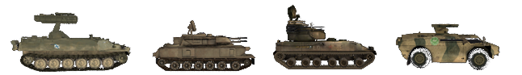

Conceptos Basicos
Primeramente deberás unirte a un escuadron.. Algunos servers te pueden forzar a hacerlo al expulsarte después de un periodo de advertencia. El juego es de lejos mucho más jugándolo con una patrulla funcional. Si necesitas ayuda, solo pregunta a los jugadores de tu escuadron que hacer. En la medida de lo posible, usa Mumble. Es comúnmente usado en PR. Al jugar PR: BF2 sin un micrófono no vivirás la máxima experiencia, así que es una inversión sabia. Si nadie responde, trata de unirte a otra patrulla o usar el chat general. Hay muchos miembros de la comunidad que están dispuestos a echarles una mano a los nuevos jugadores. Puedes jugar primero BF2 a modo de tutorial para familiarizarte con la interfaz. Este manual se centrará en las diferencias con BF2.
Selección de Kits y Re-spawn
- Cuando empieces a jugar, se recomienda que solo aparezcas como fusilero con la mira de tu elección. De esta manera podrás aprender mejor los fundamentos básicos del juego.
- Después de aprender las bases de la infantería, podrás pedirle a tu SL que te asigne un kit especializado cuando te sientas preparado para la tarea. Si quieres probar nuevo equipamiento o vehículos, podrás hacerlo en el modo coop sin causarle percances a tu patrulla arriesgando los assets del equipo..
- Los kits especializados y más difíciles de operar son generalmente limitados y solo pueden ser obtenidos si la patrulla cumple con ciertas condiciones. Estos kits reservados son de provisión limitada y siempre deberías preguntar antes de solicitar uno.
- Los kits pueden ser solicitados desde el menú de spawn principal (Como en BF2),na caja de suministros (Ver Logistica) o junto a un APC / IFV. Para poder solicitar un kit de una caja de suministros o vehículo, debes ser parte de una patrulla.
En PR: BF2 no puedes reaparecer en cada punto de control de tu equipo. Los puntos de respawn disponibles son:
- El Rally Point de tu escuadrón (RP) es un círculo verde que rodea un punto de generación con el número de tu escuadrón junto a él. Dependiendo de la ubicación del RP de tu escuadrón en relación con el FOB de un equipo, se determinará su longevidad. Nota: si apareces en el punto de reunión de otro escuadrón, aparecerás automáticamente en tu propio punto de reunión o en cualquier FOB cercano. Si no hay ninguno disponible, será trasladado a la base principal de su equipo. Si es invadido por el enemigo, el RP de tu escuadrón desaparecerá. Los RP solo están disponibles para las fuerzas convencionales. (Ver Estruturas Desplegables)
{% figure "../assets/rally.png" %} A rallypoint. {% endfigure %}
- Rally points del equipo especiales del mapa: Usualmente expiran 5 minutos después de empezada la partida y pueden ser utilizados por todo el equipo. Estos también solo permiten spawnar un máximo de 12 personas hasta que desaparezca.
- Comander Rally Point:. Este RP solo puede ser colocado por el comandante del equipo, siempre que algunos líderes de patrulla estén cerca de él. En el mapa este rally point tendrá una letra “C” adjunto.
- Base de Operaciones Desplegable (FOB) o Hideouts (Escondites): Pueden ser utilizado por todo el equipo para regenerarse, pero debe construirse antes de que esté operativo. En el mapa se mostrará como un punto de generación con un triángulo verde. Se habilita 90 segundos después de ser construido. No se puede dar spawn durante 30 segundos si 1 enemigo está dentro de los 10 m, 2 enemigos dentro de los 50m, 4 enemigos dentro de los 100m u 8 enemigos dentro de los 150m. (Ver Estruturas Desplegables)
- En el modo Insurgencia, el equipo insurgente defensor puede aparecer en el alijo (cache) que no hayan sido revelado al enemigo, este es el llamado alijo desconocido o alijo violeta. Este respawn también se desactiva si los enemigos se acercan similar al de la FOB.
{% figure "../assets/fob.png", "../assets/hideout.png", "../assets/cache-weapon.png" %} FOB, Hideout & weapon cache. {% endfigure %}
- Cuarteles General, Base principal o FOB permanente: Son el único punto respawn y reaparición que siempre estará disponibles.
{% figure "../assets/acv.png" %} Armored Command Vehicle (ACV) se encuentra en las bases principales solamente. {% endfigure %}
- Algunos mapas cuentan con spawns de paracaídas donde se simula un asalto aéreo. Estos se visualizarán moviendo los marcadores de spawns en el minimapa. Elige uno y aparecerás con un paracaídas desplegado automáticamente.
Interfaz del Juego (HUD)
- En el HUD de PR: BF2 los jugadores son notificados por mensajes específicos para el jugador que solo pueden ser vistos por ese jugador. Son usados para darle al jugador una respuesta sobre diferentes eventos dentro del juego. Por ejemplo:
- La razón por la cual al jugador no se le da el kit que solicitó.
- La razón por la cual el asset desplegable que el jugador solicitó no puede ser construido.
- El jugador debe salir del vehículo o posición actual para evitar ser castigado.
- PR también usa Notificaciones HQ que se muestran como oraciones largas en la parte superior izquierda de la pantalla. Estas notificaciones te dan novedades respecto a los objetivos actuales, progreso de misión y otros mensajes esenciales.
- Las miras del arma han sido eliminadas de la pantalla. Si quieres disparar precisamente necesitaras apretar la tecla alternativa de disparo para apuntar con la mira de tu arma, o usar el BUIS para combates a cortas distancias (Ver Cambio de Mira).
- Los tags con el nombre de los jugadores han sido eliminados para todos los jugadores. Es de vital importancia que identifiques a tus blancos antes de disparar para evitar fuego amigo. Aprender las diferencias en el camuflaje, banderas y el perfil de las facciones de infantería te ayudará a identificarlos más rápido. Por ejemplo, para reconocer al líder de patrulla, busca la antena de la radio sobresaliendo de su mochila.
- No hay barra indicadora de salud indicando tu estado. Cuando pierdes más del 25% de tu salud, verás un efecto de visión de túnel negro que empeora cuanto más salud pierdes, a la vez que escuchas sonidos de dolor. Continuaras perdiendo salud al desangrarte hasta que recibas atención médica, de lo contrario morirás. Si tu salud baja a niveles muy bajos la pantalla perderá color, tu visión se volverá nula y no podrás correr. Tendrás unos pocos minutos para recibir atención médica antes de morir..
- El contador de munición solo muestra el modo de tiro del arma y el número restante de cargadores.
- Para tener una idea estimada de cuanta munición queda en el cargador puedes abrir la radio (Q) y ver el indicador visual de la cantidad de munición restante.

- El Medico puede ver cuánto le falta para terminar de curar a un soldado en el HUD en la esquina inferior derecha. La infantería puede ver de la misma manera cuanto le falta para terminar de construir un asset desplegable.
- No hay mensaje de muerte (el fuego amigo es una excepción). Incluso el marcador no mostrará quién está vivo o muerto en el equipo enemigo. Si necesitas saber si alguien está muerto, debes buscar su cuerpo.
- Solo los vehículos usan un mini-mapa permanente en el HUD. El mapa completo superpuesto está disponible para todos.
- El mapa actual y despliegue puede ser visto en la parte superior de la pantalla cuando abres el mapa.
- Usando la flecha pequeña veras la nformación de los assets del mapa actual y de todos los vehículos incluyendo los tiempos de respawn de vehículos amigos.
{% figure "../assets/assets.png" %} Current map asset info overlay. {% endfigure %}
- Los tickets restantes de tu equipo y el tiempo restante solo se ven en la pantalla de la patrulla. Los tickets de los enemigos no se visualizan..
- La Supresión sucede cuando se estas bajo fuego por rifles, armas pesadas o explosiones cercanas. La pantalla se pondrá algo oscura y borrosa. Este efecto simula la poca capacidad que se tiene para devolver el fuego de manera precisa al ser suprimido por el enemigo.
{% figure "../assets/suppresion.png" %} Normal view of the game (left) and suppresion effect in action (right). {% endfigure %}
- Cuando el jugador está muerto, y no pueda ser revivido la pantalla estará en negro con las palabras “MUERTO” y no podrás ver tu entorno ni a otros jugadores.
- Your weapon will deviate and become inaccurate to shoot based on the amount of movement you make. To have an indication of this inaccuracy there is a deviation indicator right above the compass. The wider this indicator is, the more deviation you have.
- El sistema automático para identificar ha sido removido para la infantería, solo los vehículos aéreos pueden ser identificados al estilo de BF2.
- Los Oficiales pueden enviar información de contactos al comandante o usar la radio para colocar manualmente marcas distintivas en el mapa para su equipo aliado. Soldados normales solo pueden gritar una advertencia local cuando estén a la vista unidades enemigas.
- El sub-menú del Radio (teclas por defecto: Q & T) contiene elementos con 2 funciones, ejemplos: “RECARGANDO / CESE EL FUEGO” click izquierdo indicara a las personas a tu alrededor que estas cambiando de cargador y click derecho avisara un alto al fuego o dejar de disparar. El mismo principio se aplica a “AVANCEN / RETROCEDAN” y otras funciones del sub-menú.
- Te puedes orientar en el mapa buscando los elementos alrededor o a tu icono de identificación.
- Algunos equipos en particular o armas cuentan con un sub-menú de la radio exclusiva. Cuando sostienes un paquete medico puedes usar el sub-menú para decir “PRIMEROS AUXILIOS” para indicar a los jugadores cercanos que lo quieres sanar. Muchos equipos y armas utilizan esta clase de sub-menús exclusivos.
{% figure "../assets/commorose.png" %} Commo-rose when pressing Q. {% endfigure %}
Control de Daño y Salud
Las armas en Project Reality son sumamente letales y sólo es cuestión de tiempo hasta que te disparen y empieces a sangrar. Aunque la interfaz en PR no contenga una barra de salud, una vez tu vida baje del 75% habrá señales visuales y audibles para avisarte, como visión roja acompañada de tos o gritos.
Curación
Si tus heridas no son tratadas, te desangrarás lentamente hasta morir. Para evitarlo, tienes dos maneras de curarte. Casi todos los kits incluyen un vendaje de campo que se selecciona presionando la tecla apropiada o navegando por la selección de armas. Presionar el botón de disparo tira el vendaje al suelo. En un segundo o dos el vendaje de campo desaparecerá y el jugador que se encuentre al lado de este recuperará un 25% de su vida total.
Ya que la mayoría de kits tienen sólo 1 o 2 vendajes de campo, una mejor manera de recuperar vida es ser tratado por un médico. Los médicos son capaces de curar por completo a un jugador usando un kit de primeros auxilios y se les puede llamar usando la “Q” y seleccionando “Necesito médico”. El médico seleccionará el kit de primeros auxilios pulsando la tecla numérica apropiada o navegando por la selección de armas. Sin embargo, al contrario que en el BF2, el médico no puede tirar el kit de primeros auxilios al suelo, tiene que sostenerlo en las manos, estar pegado al jugador que quiere curar, mantener pulsado el botón izquierdo del ratón. Un sonido simulando vendajes siendo rasgados indicará que los primeros auxilios están siendo aplicados. Curar a alguien completamente lleva unos 15 segundos, así que asegúrate de hacer esto en un lugar seguro.
{% figure "../assets/fielddressing.png", "../assets/kit.png", "../assets/epipen.png" %} Field dressing, first aid kit & epipen. {% endfigure %}
Resucitación
Si no puedes ser curado a tiempo, te quedarás inconsciente y la pantalla dirá que has sido herido de gravedad. ¡Esto no significa que estés muerto! Cuando seas herido de gravedad un médico te puede resucitar en un periodo de hasta 5 minutos, ahorrándole al equipo valiosos tickets. Puedes usar el Mumble para coordinarte con el médico, usando el canal local (H) o en la radio de escuadron (0 teclado numerico). Para resucitarte, el médico seleccionará la epipen de su selección de armas y con la epipen en la mano, administrará la dosis de epinefrina en el centro del torso del jugador inconsciente, haciendo click izquierdo y manteniéndolo pulsado. El jugador volverá a estar consciente pero al contrario que en el BF2, solo tendrá un 10% de la vida máxima, y necesitará curación. El médico y el jugador recién resucitado deberían encontrar una zona segura para continuar el proceso de curación ahí. Si el jugador está atascado (dentro de un muro, de un árbol, etc.) o en una mala posición para revivirlo, la opción de drag (mover o arrastrar) puede ayudar. Esto moverá el cuerpo y puede que lo desatasque. Para arrastrar un cuerpo como médico, debes estar agachado y permanecerlo. Luego puedes usar la ranura de arma de arrastre para comenzar a arrastrar. Puede arrastrar en todas las direcciones, incluso hacia atrás.
{{ "Video Tutorial - Reviving" | youtube("auBgiI8IxWE") }}
Muerte
A veces, los jugadores no podrán ser revividos, como cuando un jugador muere en un vehículo. Si fue revivido recientemente y vuelve a ser gravemente herido en 2 minutos, no podrá ser revivido la segunda vez. Si estás herido y no te reviven en 5 minutos, también morirás. Si no hay posibilidad de ser revivido, haz click izquierdo en Give up/Call Medic (Rendirse/Llamar médico) en la pantalla de respawn. Ahora, la pantalla mostrará que estás muerto y te podrás preparar para reaparecer. El tiempo que pases antes de darle al botón de rendirse (give up) cuenta para el total de tiempo de reaparición.
Re-spawning
El tiempo de reaparición de un jugador es como mínimo de 45 segundos y como muchos 60 segundos más las penalizaciones temporales. El tiempo que ha pasado esperando a un médico es restado a ese tiempo. Una vez que un jugador muere, tiene que esperar al menos 5 segundos antes de reaparecer. Estas acciones influyen el tiempo de reaparición:
- Muerte del Jugador: +3s
- Capturar un punto (CP) o destruir un objetivo: -3s
- Realizar una accion defensiva: -1s
- Construir un FOB con tu escuadron: -10s
Un penalizador temporal al tiempo de reaparición que afecta sólo a la próxima vez que mueras (hasta un máximo de 5 minutos) es añadido por estas acciones:
- Teamkill (matar a un aliado): 15 segundos por teamkill
- Suicidarse: 15 segundos
- Ser capturado como civil: 90 segundos
- Matar a un civil violando las reglas de enfrentamiento ROE: 120 segundos por civil
- Destruir un cache (alijo de armas) aliado: 300 segundos
Para elegir un punto de regeneración, abre el mapa de spawns y selecciona una localización pertinente. Cuando estés satisfecho con ese punto de regeneración, deberás hacer click en Done (listo) en la esquina inferior derecha de la pantalla del mapa para reaparecer en la partida. Simplemente esperar a que el temporizador llegue a “0” o dándole a la tecla <enter> no te hará reaparecer automáticamente. Si ves un número muy grande en el temporizador, como 5999, es que no le has dado al botón listo.
Logística
Ya sea que te quedes sin municiones y necesites rearmarte, quieras un kit nuevo o simplemente quieras construir estructuras, la logística mantiene vivo a tu equipo.
Munición
Para poder rearmarte, deberás acercarte a una de varias fuentes de munición, que luego recargará automáticamente tus armas. Estas fuentes son:
- Bolsas de Munición - Estos se pueden encontrar en los kits de fusilero, militante, guerrero y algunos insurgentes y deben ser arrojados (click izquierdo) al suelo, para que usted u otros soldados puedan rearmarse, o en estructuras desplegables (tow, aa, morteros) para recargarlos.
- Cajas de Munición - Lanzadas por vehículos, APCs and IFVs.
- Cajas de Suministros Ligeras/Pesadas - Más información en la siguiente sección.
- Caches (Alijos de Armas) - Disponible solo para insurgentes.
- Deposito de Vehículo - Presente en todas las bases principales, también te cura.
{% figure "../assets/ammobag.png", "../assets/supplycrate.png", "../assets/inscrate.png", "../assets/cacahe.png", "../assets/depott.png" %} Ammunition bag, Coalition forces ammo crate, Insurgent forces ammo crate, weapon cache & Vehicle depot. {% endfigure %}
Tenga en cuenta que, con la excepción de Caches y Deposito de Vehículos todas las demás fuentes de munición son limitadas. Eventualmente, estas fuentes se agotarán y desaparecerán. Incluso es posible que las fuentes de munición se agoten antes de que estés completamente rearmado. Bolsas de Munición, Cajas de Munición y Cajas de Suministros usan Puntos de Suministros para determinar cuánto tiempo se pueden usar. Puede encontrar los puntos de suministro restantes de Cajas de Suministros y Cajas de Munición mirándolos por un segundo. Entonces aparecerá junto a la brújula. Las diversas armas disponibles en PR requieren diferentes cantidades de puntos de suministro para ser repuestas. Los artículos de utilidad como el gancho de agarre, las bengalas y los vendajes de campo cuestan menos para reabastecerse por uso que los artefactos explosivos como cohetes/misiles antitanque, granadas de fragmentación y minas. Consulte las tablas a continuación para conocer el costo de reabastecimiento de la categoría y el tipo de arma correspondiente:
Armas de Fuego
| Tipo | Costos de Puntos de Suministros |
|---|---|
| Pistolas de baja capacidad | 15 |
| Pistolas de alta capacidad | 30 |
| PDW (arma de defensa personal) | 30 |
| SMG | 45 |
| Escopeta primaria | 50 |
| Escopeta del breacher | 25 |
| Rifle | 60 |
| Sniper | 40 |
| LMG | 150 |
| GPMG | 200 |
Lanza Granadas
| Tipo | Costos de Puntos de Suministros |
|---|---|
| Anti-tanque x1 | 70 |
| Anti-tanque x2 | 140 |
| Flare | 60 |
| Fragmentación baja capacidad | 80 |
| Fragmentación alta capacidad | 120 |
| Smoke/Humo | 60 |
Articulos y Utilidades
| Tipo | Costos de Puntos de Suministros |
|---|---|
| Bolsa de Munición | 200 |
| C4 baja capacidad | 45 |
| C4 alta capacidad | 75 |
| Tripflare/granada de vengala | 20 |
| Gancho de breacher | 40 |
| Epipen | 60 |
| Vendaje x1 | 30 |
| Vendaje x3 | 75 |
| Vendaje x6 | 120 |
| Vendaje x12 | 180 |
Artillería pesada y municiones
| Tipo | Costos de Puntos de Suministros |
|---|---|
| Granada de fragmentación x1 | 60 |
| Granada de fragmentación x2 | 120 |
| Granada de fragmentación x4 | 240 |
| Granada de humo de baja capacidad | 40 |
| Granada de humo de alta capacidad | 60 |
| SGranada de humo de señal | 30 |
| Mina Anti-personel x2 | 140 |
| Mina Anti-personel x3 | 210 |
| Mina convencional | 210 |
| Mina insurgente | 160 |
| IED ligero | 60 |
| IED pesado | 80 |
| Misil anti-aereo x1 | 100 |
| Misil anti-aereo x2 | 170 |
| Anti-tanque ligero x1 | 70 |
| Anti-tanque ligero x2 | 140 |
| Anti-tanque ligero x3 | 210 |
| Anti-tanque ligero x4 | 280 |
| Anti-tanque mediano x1 | 80 |
| Anti-tanque mediano x2 | 160 |
| Anti-tanque mediano x3 | 240 |
| Anti-tanque pesado x1 | 90 |
| Anti-tanque pesado x2 | 180 |
| Anti-tanque guiado | 120 |
Tenga en cuenta que en un servidor local, el sistema de reabastecimiento no funcionará como se describe. Cada ranura de arma requerirá 100 puntos de suministro para recargar independientemente del tipo de artículo.
Solicitar un kit cuesta 200 puntos de suministro. Tenga en cuenta que volver a armar una bolsa de munición en, por ejemplo, una caja de munición o una caja de suministros ligeros/pesados costará tantos puntos como proporciona (200). La cantidad de puntos de suministro para las fuentes de suministro son:
- Bolsas de Munición : 200 (solo contarán para 43 puntos de suministro cuando las utilice un emplazamiento de activos como un TOW o un mortero, por ejemplo)
- Cajas de Munición : 450
- Caja de Suministros Ligera : 1500
- Cajas de Suministros Pesada : 3000
El reabastecimiento no es instantáneopero toma unos segundos, dependiendo de la fuente de munición y de la cantidad de munición que necesitas para reabastecerte.
Además, si no te estás rearmando, confirma que las cajas de suministros ligeros/pesados son realmente tuyas, el rearme desde Cajas de Suministros Enemigas no es posible.
Cajas de Suministros
Hay dos tipos de cajas de suministro en PR: BF2: caja de suministro ligera y caja de suministro pesada. Si bien ambos permiten reabastecer a los jugadores y construir implementables, una caja ligera es el equivalente a la mitad de la caja de suministros pesadas, lo que significa que necesitará 2 cajas de suministros ligeros donde solo se necesita 1 caja de suministros pesadas. Para obtener más información sobre emplazamientos desplegables, Ver Estruturas Desplegables.)
{% figure "../assets/largecrate.png", "../assets/smallcrate.png" %} Aquí puedes ver la caja de suministros pesadas a la izquierda y la versión ligera a la derecha. {% endfigure %}
Al igual que con el rearme, solicitar kits agotará las cajas de suministros. Cada kit costará 200 puntos, siendo las cajas ligeras(7x kits) y las pesadas 3000 (14x kits).
Solicitar un kit de una caja que no tiene suficientes puntos aún le otorgará el kit, pero la caja se destruirá en el proceso.
La caja de suministro ligera puede ser transportada por:
- Helicopteros de carga ligera como Huey, Lynx and Zhi-9B (Una Caja)
- Camiones de Transporte (Una Caja)
Mientras que la caja de suministros pesadas puede ser transportada por:
- Helicópteros de carga media como el Black Hawk, Mi-17 and NH-90 (Una Caja)
- Helicópteros de carga pesada como el Chinook, Zhi-8KA and MV-22 (Dos Cajas)
- Camiones Logísticos: (Dos Cajas)
La propiedad de la caja está representada por la bandera que se muestra en la parte superior de la caja.
Punto de Reparacion Desplegable
Los camiones logísticos también tienen la capacidad de dejar una estación de reparación. Son necesarios para reparaciones de campo de vehículos que están muy dañados y no pueden moverse.
{% figure "../assets/reapir.png" %} Repair drop. {% endfigure %}
Puntuación
La puntuación de un jugador se divide en puntos de trabajo en equipo y puntos individuales. Logicamente que las actividades relacionadas con el equipo (construir, conducir vehículos, defender/atacar banderas) contribuyen a la primera y las acciones individuales (matar jugadores) contribuyen a tu puntuación personal.
La puntuación total de un jugador nunca puede bajar de 0, pero la puntuación del trabajo en equipo puede volverse negativa. También hay multiplicadores de puntuación para cuando estás, por ejemplo, en un vehículo o como líder de escuadrón. A continuación se mencionan algunas de las acciones que suman o restan puntos. Estos no son todos, pero te dan una buena idea de lo que puedes lograr.
- Capturar un civil: +100
- Matar un civil (incumpliendo el ROE): -100
- Destruir un objetivo aliado: -100
- Destruir un objetivo enemigo: +150
Morteros
Una posición fija de mortero puede proveer apoyo con fuego indirecto a largas distancias. Todas las facciones pueden usar proyectiles de explosivos de alto poder (HE). Las fuerzas convencionales y la milicia pueden usar proyectiles de explosión aérea (air-burst) y proyectiles de humo. Los morteros no pueden ser construidos en mapas más pequeños de 2km.
- Explosivos de alto poder (HE) (presiona 1 para seleccionarlo):Los proyectiles más comunes. Infligen la mayor cantidad de daño directamente al objetivo. Ideales para objetivos con blindaje ligero y emplazamientos.
- Explosión aérea (Air-burst) (presiona 2 para seleccionarlo): Este proyectil explota en el aire sobre el terreno, cubre un área mayor, pero inflige menos daño en general. Ideal para infantería que se encuentre en el interior de un edificio o en un terreno irregular.
Cuando los morteros hagan falta puedes usar la calculadora del mortero (presiona 3 o 4 para seleccionar)).La distancia al objetivo, y la diferencia de elevación se pueden introducir en la calculadora haciendo click en los números en los campos de “Distancia (Range)” y “Elevacion (Height)” Para obtener el rango, asegúrese de que el marcador de SL esté en el objetivo, luego abra el mapa y encontrará el rango debajo del mapa. Una vez que haya terminado, simplemente haga clic en el botón “Calcular” para mostrar la elevación del cañón requerida. La elevación se puede ajustar con las teclas W y S mientras que la desviación se cambia con las teclas A y D. Cuando se establezcan ambos valores, simplemente seleccione las rondas requeridas y dispare. Hay rondas Air-Burst e Impact disponibles que comparten municiones.
{% figure "../assets/mortars.png" %} Interfaz de la calculadora del mortero. {% endfigure %}
Puentes de Soporte (CSB)
Cuando es necesario cruzar ríos pequeños o puentes dañados, las fuerzas convencionales pueden desplegar CSB utilizando sus camiones logísticos, que transportan dos de ellos. En Project Reality, los CSB solo se pueden usar para llenar los huecos de los puentes destruidos y en ubicaciones predeterminadas identificadas por (obvios) pequeños montones de arena colocados a través de un obstáculo natural, como un río.
Los CSBs son muy angostos, así que maneje con cuidado al cruzarlos.
El proceso de despliegue de los CSB es muy simple: 1. Conduzca un camión de logística hasta el lugar donde se desplegara el CSB. 2. Coloque la parte delantera o trasera del camión lo más cerca posible de la posición de despliegue. 3. Seleccione el CSB como equipo activo del camión. 4. Presiona fuego alternativo (click derecho]) para desplegar el puente.
{{ "Video Tutorial - CSB Deployment" | youtube("Vn66KbNrVJA") }}
{% figure "../assets/csb.png" %} CSB del camión que se está desplegando. {% endfigure %}
En algunos casos, se requieren varios CSB para abarcar la distancia completa. En tales situaciones, debe conducir hasta el final del puente incompleto e implementar un nuevo CSB y repetir hasta el final.
Navegación en el campo de Batalla
Es muy fácil perderse en los grandes mapas de PR: BF2. El ritmo y la coordinación del equipo requiere que los jugadores comuniquen lugares de una manera clara y concisa, PR: BF2 ofrece 4 herramientas para ayudar a los jugadores con esto.
- Los líderes de patrulla pueden usar la marca de orden para comunicar lugares/objetivos a la patrulla y al comandante.La dirección del marcador está indicada por una “V” (cheurón) en la brújula. Si la marca está dentro de los 75m podrás ver un icono 3D mostrando la ubicación frente a ti. La marca será visible en el mapa.
{% figure "../assets/target.png", "../assets/build.png", "../assets/observe.png", "../assets/defendmarker.png", "../assets/demolish.png", "../assets/move.png" %} Atacar7Objetivo, Construir, Observar, Defender, Demoler y Marca de Movimiento , respectivamente. {% endfigure %}
- Una brújula precisa marcada con grados en el área central inferior de su pantalla. La brújula se puede usar para dar orientaciones exactas de los enemigos cercanos. Las 8 direcciones cardinales están claramente indicadas junto con las etiquetas de los grados que aumentan progresivamente cada 15° con divisiones principales cada 5°. Si solo desea comunicar una dirección general, es una buena práctica decir la dirección cardinal, seguida del grado y, en algunas situaciones, la distancia, si corresponde. Por ejemplo “Enemigo identificado Noreste 75° grados 200 metros”.
- Si el objetivo está dentro de la línea de visión cuando todos se enfrentan en la misma dirección simplemente comunica el número de grados.
*Recuerda que la separación entre cada línea de la brújula corresponde a 5°. Si el objetivo no está en un grado marcado calcula rápido con la etiqueta-guía más cercana y suma los grados correspondientes, ejemplo guía 75° + 5° = 80°. Objetivo a 80 grados.

- Los mapas en PR: BF2 contienen cuadriculas marcadas con letras con subcuadros de referencia.. Las marcas con letras están desde la parte superior izquierda del mapa, el mapa se divide en 169 cuadros empezando por “A1” en la esquina superior izquierda y termina con “M13” en la parte inferior derecha. Cada cuadro se divide en subcuadros que están marcados del 1 al 9 en el orden del teclado numérico (key pad/kp) de la computadora. (Arriba a la izquierda empezando con 7, 8, 9). Puedes comunicar coordenadas tomando como referencia esta cuadricula completa, para una ubicación aproximada (ejemplo D6). o para una ubicación más precisa (ejemplo D6-kp2). Por lo general estas coordenadas se usan para comunicarse objetivos o lugares importantes entre patrullas.Al usar Mumble se menciona la primera letra en referencia al alfabeto fonético. Las palabras son Alpha, Bravo, Charlie, Delta, Echo, Foxtrot, Golf, Hotel, India, Juliett, Kilo, Lima, Mike, November, Oscar, Papa, Quebec, Romeo, Sierra, Tango, Uniform, Victor, Whiskey, X-ray, Yankee and Zulu
- La escala de cada cuadro aparece en la esquina inferior derecha del mapa. Un mapa de 1km² indicara que el lado de cada cuadro representa 75m, 150m en 2km² y 300m en un mapa de 4km². Se puede estimar fácilmente las distancias usando la cuadricula. En la pantalla del líder de patrulla aparece la distancia aproximada a la marca establecida en el mapa en la parte inferior central.
{% figure "../assets/grid.png" %} {% endfigure %}
Informaciones Basicas de Vehículos
Muchos vehículos suelen comportarse bastante diferente en comparación a BF2 y requieren un conocimiento más avanzado para operarlos. Ya que ellos tienen un tiempo de reaparición bastante largos (cerca de 20 minutos) y es vital saber cómo mantenerlos lejos de las situaciones problemáticas, esta parte se enfocara en los tipos de vehículos y cómo influyen en el equipo. Para más detalles de cómo operar los vehículos ver la parte adicional de este manual en la Sección de Operación de Vehículos.
Hay muchos tipos de vehículos en PR: BF2 que usan una clasificación. Estos puede que no estén en la línea de su contraparte de la vida real por razones de juego. La siguiente lista muestra las principales clases de vehículos en PR: BF2:
- Jeep: ehículo de transporte pequeño que no siempre cabe la patrulla entera. Puede soltar cajas de munición. A veces están equipados con una ametralladora o cañón ligero.

- Vehículos Civiles: PR: BF2’s los insurgentes tienen a su disposición autos civiles y technicals con una ametralladora montada, Technicals lanzacohetes y cañones SPG-9. También tienen camiones con cañones AA, camiones bomba y coches bombas en su arsenal.

- Camion: Vienen en dos variantes el de transporte y el de logística. La variante de transporte está capacitada para soltar una caja pequeña de suministro y puede soportar una patrulla completa. La variante de logística puede llevar 2 soldados y tiene la capacidad de soltar 2 cajas pesadas de suministro, estaciones de reparación y puentes de apoyo cercano (más sobre esto más tarde).

- Vehículos Blindados de Transporte de Personal (APC): grandes vehículos blindados que a menudo no están equipados con armamento pesado. A menudo no posees la potencia para destruir otro vehículos blindados como los IFV’s y Tanques pero son los mejores vehículos para asistir a la infantería. Pueden entrar 2 Conductores (conductor y artillero) y 6 soldados como pasajeros.

- Vehículos para Combate de Infanteria (IFV): Mejores armados y potentes que la mayoría de APC’s con más posibilidades de destruir blindados pesados con sus Misiles AT. No siempre tienen la capacidad de transportar infantería bajo esta categoría caen como vehículos de reconocimiento.

- Vahículos con Misiles AT Montados (ATM): Su nombre habla por sí mismo. Esos vehículos están armados con misiles AT para destruir otros vehículos blindados. No pueden transportar infantería.

- Tanque: El más pesado de los vehículos blindados. Equipados con armamento AP, HE y COAX.

- Vehículos Anti-Aéreos: Usualmente son blindados ligeros con la capacidad de destruir aviones enemigos y helicópteros. Pueden usar misiles o/y Armas pesadas.

- Bote: PR: BF2 tiene una variedad de botes armados y no armados.

- Helicoptero de Transporte: Estos helicópteros usualmente vienen equipados con ametralladoras de puerta para que la infantería montada las use. Y algunos tienen la capacidad de soltar cajas pesadas de suministro. Están los livianos, medianos y pesados helicópteros de transporte. Leer la sección de cajas de suministros para ver que variante tiene disponible cada helicóptero.

- Helicoptero de Ataque: Estos helicópteros están equipados con cañones automáticos y/o diferentes tipos de cohetes o misiles. Hay variante tanto como ligera, mediana y pesada. Helicópteros con la capacidad de lasear usando sus cámaras térmicas caen dentro de la categoría Reconocimiento en PR: BF2 y no siempre se encuentran armados.

- Aviones:PR: BF2 tiene unas cuantas variedades de aviones. Hay aviones de ataque ligero y pesado, de combate, bombarderos y cazabombarderos.

Todos los vehículos aliados están marcados en el mapa con iconos únicos para una fácil identificación..

- Si se destruye un vehículo de tu equipo pierdes tickets::
- Jeep o Camion: 2 tickets
- Helicoptero de Transporte: 5 tickets
- APC/AAV/RECON: 5 tickets
- Tanque o IFV: 10 tickets
- Avion o Helicopteros de Ataque: 10 tickets
- Los vehículos están bloqueados por equipo así que no podrás usar vehículos enemigos de cualquier tipo.
- Los vehículos tienen puntos para poder entrar de acuerdo a las puertas del casco.
{% figure "../assets/entrypoints.png" %} Los puntos de entrada de vehículos pueden diferir según el vehículo. Busque las escotillas. {% endfigure %}
- Soldados normales pueden manejar pequeños vehículos ligeros sin blindaje tales como jeeps, camiones y botes sin necesidad de algún kit especializado. Si se requiere un kit de conductor (crewman kit) o piloto para operar alguna posición del vehículo recibirás un mensaje de advertencia al entrar al vehículo y la pantalla se pondrá oscura. Si no te sales del vehículo en 5 segundos morirás.
- Al salir de un vehículo en movimiento o incendiándose recibirás daño o posiblemente mueras. A mayor velocidad con la que se mueva el vehículo incrementara la posibilidad de morir al salir.
- Destruir restos de vehículos no influye en la puntuación a pesar de recibir un mensaje de advertencia indicando daño sobre el equipo aliado.
- Cuando entres en armas estáticas o armas en vehículos omara un tiempo específico de calentamiento antes de poder hacer uso de ellas:
- MG (ametralladora): 5 seconds
- Misil Anti-Aéreo: 5 seconds
- Anti-Tanque estatico: 10 seconds
- Cañon principal de blindado: 30 seconds
- La mayoría de los Anti-tanques estáticos tienen un zoom predeterminado y algunos tienen visores térmicos.
- Salirse de aeronaves desde grandes alturas te dañara y probablemente morirás.
- Los jugadores pueden pedir kits de las puertas/escotillas de los APC/IFV.
- Vehículos blindados son más vulnerables al ser atacados por los flancos. El blindaje en la parte posterior de los vehículos es muy débil, un solo proyectil anti-tanque puede inutilizar o destruir por completo el vehículo.
- En los servidores públicos (no en los modos de juego locales), puede cambiar rápidamente al siguiente asiento libre disponible en un vehículo presionando F8.
- Cuando esté en un vehículo, puede ver la información sobre los asientos ocupados en la parte inferior izquierda del HUD. Muestra solo los asientos importantes de la tripulación como marcadores cuadrados. Esto incluye las posiciones de conductor y artillero. Los asientos de los pasajeros no tienen dichos marcadores y se muestran como un contador separado.
{% figure "../assets/seaticons.png" %} Los miembros importantes de la tripulación se muestran como marcadores cuadrados. Los pasajeros usan un contador total sobre el ícono del vehículo. {% endfigure %}